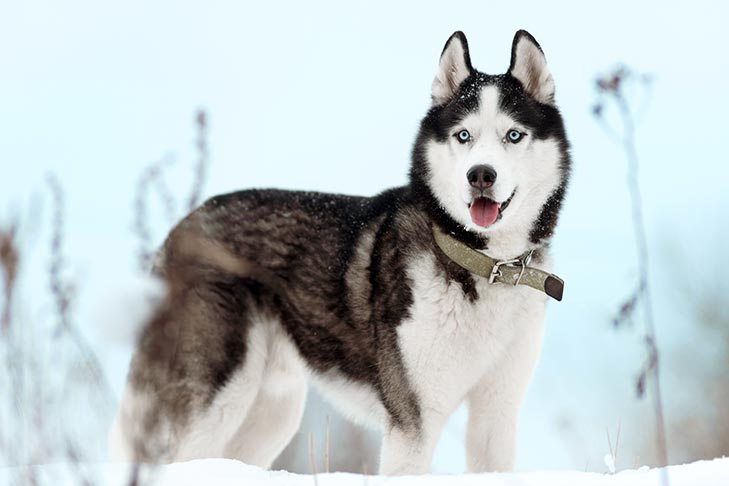
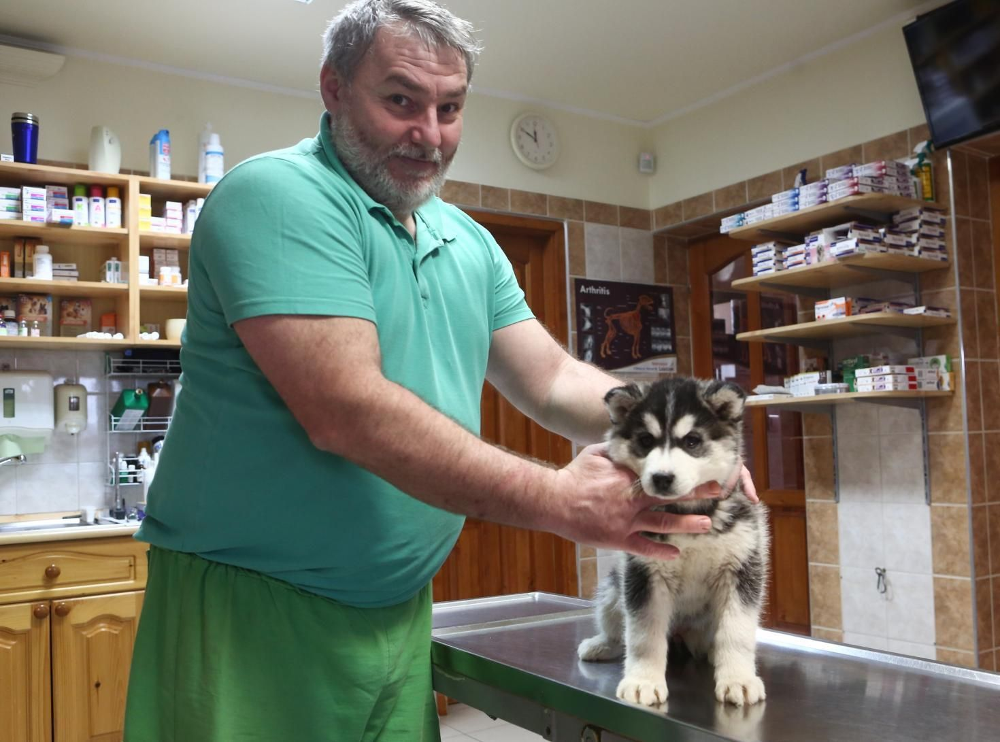
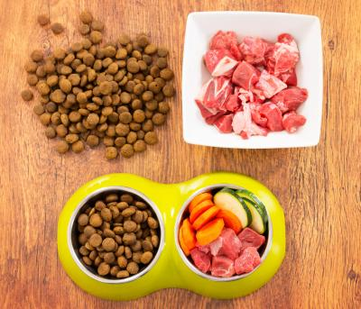
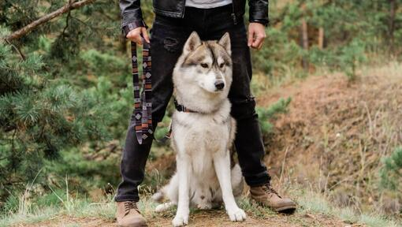

Milyen is a Szibériai husky?
A Szibériai husky nagyon szerető, kedves és érzékeny kutyafajta, amely kétségtelenül sok örömet fog okozni a gazdájának. A szibériai husky legfeltűnőbb jellemzői a sugárzóan kék szemek és a tipikus fekete-fehér (és néha ezüstös) szőrzetmintázat, s ezeket a kutyákat látva télies tájakra és szánhúzó versenyekre gondolunk. Intelligens, független, ugyanakkor konok jelleme tapasztalatot és határozottságot igényel. Ennek a fajtának a tartása különleges feltételeket igényelhet, és ahhoz, hogy a kutya egészséges legyen - megfelelő gondozást kell biztosítani.
Tisztántartása
Ezeknek a gyönyörűségeknek a bundája rendszeres ápolást igényel, különösen a tavaszi és őszi vedlési időszakban, amikor jókora szőrmennyiséget hullatnak. Leginkább fésülni kell őket, de a fogaikat és a füleiket is ápolni kell. Fürdetni őket ritkán kell, mert a macskákhoz hasonlóan saját magukat mossák.
Etetése
A szibériai huskykat úgy tenyésztették, hogy kevés táplálékra van szükségük a túlélésük érdekében. Különösen érdemes odafigyelni emiatt arra, hogy ne kapjanak túl nagy mennyiségű eledelt, mert az árt az egészségüknek. Napi kétszeri etetés az ideális számukra. Ők fehérjében gazdag étrendre támaszkodnak fizikai és táplálkozási szükségleteik kielégítésére.
Betegségek
Sajnos a többi kutyák mellett a huskyknak is vannak betegségeik és van, amelyiket nem lehet meggyógyitani:
| Betegségek: | ||
|---|---|---|
| Neve | Leírása | Gyógyítható-e? |
| Csípőízületi diszplázia (röviden:Csípődiszplázia) | A csípő diszplázia egy örökletes betegség, melyben a combcsont vége nem illeszkedik pontosan a csípőüregbe, emiatt mozgékony ebeink az idő előrehalattával egyre jobban fájlalják a lábaikat és elkezdenek sántítva menni. | Tornáztatással és megfelelő diétával sokat lehet javítani az állapoton, de teljesen nem gyógyítható. |
| Szürkehályog | A szürkehályog a szemlencse egy részének vagy egészének elhomályosodását jelenti, ezáltal károsodik a kutyák éles látása. A legtöbb esetben a szürke hályog öröklődik. | Sajnos csak műtéttel lehet orvosolni, mivel a jelenlegi gyógyszereink még nem képesek hatástalanítani. Ha nem kezelik gyorsan ezt a rendellenességet, a kutya egyik vagy mindkét szemében megvakulhat. |
| Cink-reaktív dermatózis | Ilyenkor a cink nem tud normálisan felszívódni a belekben, amely bőr és szőr problémákat okozhat a kutyusoknál. | A betegséget gyógyítani sajnos nem lehet, viszont hatékonyan kezelhető. Ilyenkor kiskedvencünket az élete végéig gondoskodni kell a folyamatos cinkpótlásáról. |
| Pajzsmirigy alulműködés | A kutyáknál a pajzsmirigy számos hormont termel, köztük a T3-at és a T4-et, amely a test normális metabolizmusához (anyagcseréjéhez) szükséges. Ennek az alulműködése során az eb elhízhat,letargikus lesz,könnyebben kap bőrfertőzés, jobban hullik a szőre és még sorolhatnám. | A pajzsmirigy alulműködésben szenvedő kutyák hiányos hormontermelését gyógyszerkészítményekkel pótolhatjuk. A tabblettás vagy az oldatos formátumú gyógyszerek adása mellett a kis pajtásunkat kezdetben havonta majd fél évente szükséges kontrollra vinni. |
| Hőguta | Hőgutáról akkor beszélünk kutyák esetében, ha testhőmérsékletük 40 fok fölé emelkedik hőtorlódás miatt. Ez a hőtorlódás megzavarhatja akár a folyadékháztartást, a szív- és érrendszert, valamint ezek következtében az állat többi szervének működését is súlyosan károsítja. | Ha a négylábú társunk hőgutát kap, akkor az állatorvos odaérése vagy az állatkorházba szállítása alatt árnyékos helyre kell vinni a blökit, utána kínáljunk neki vizet és emellett enyhén nedvesíteni kell a szőrét. Ha sikeresen is lehűtöttük a kedvenvünket és úgy tűnik, hogy már nincs veszély, akkor is mindenképpen mutassa meg egy állatorvosnak, mivel ő tudja jól megítélni, hogy mennyi bajt okozott a hőguta. |
Nevelése
Akik még sosem tartottak kutyát vagy nagyon félénk természetűek, jobb, ha más fajtát keresnek. A huskyk a leginkább magabiztos, tapasztalt kutyatartókhoz illenek, szükségük van egy erős falkavezérre. Mivel munkakutya, sok mozgásra van szüksége. Fontos dolog az, hogy próbáljunk meg minden nap futni vele 8-9 kilométert (vagy 3-4 alkalommal levinni séltáltatni). Ha ezt nem tudjuk megtenni, akkor szellemileg fárasszuk le egyéb elfoglaltságokkal.
